One master plate — 221B, gas-lit, on its floating rock — and two ways to make it move without ever ceasing to be itself. Nothing here is re-composed, re-lit or re-modelled. The brief for both techniques was the same: the plate stays the plate; only the air, the fire and the lamplight are allowed to change.
The plate handed to an image-to-video model as both the first frame and
the last frame, so the clip is forced to return to its own opening image. No audio, no cut.
The prompt asked for light and nothing else: the lamp flame, the hearth, the window panes
breathing, and a two-percent camera push. The last twelve frames are then fused into the
first twelve offline, which closes the wrap exactly — one file, one <video loop>,
nothing for the browser to keep in sync.
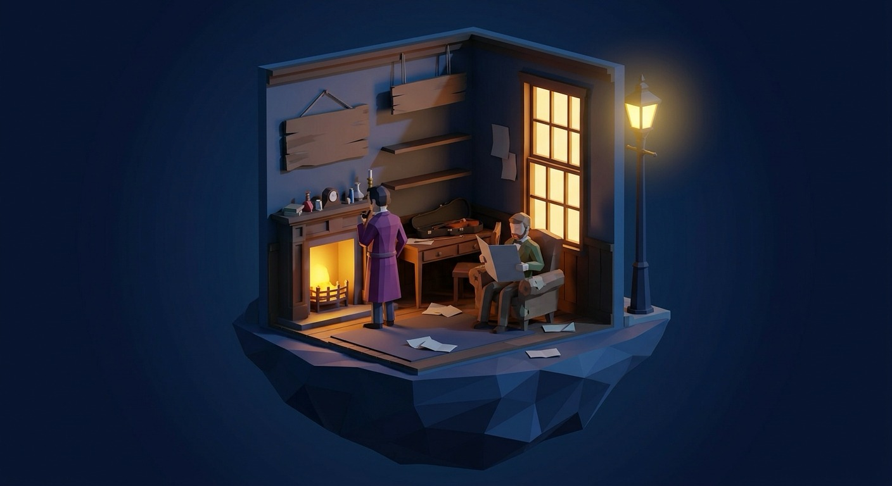
image and lastFrameImage both set to the plateThe same plate cut into depth — void, room, rock, lamp — and put back together with a twelve-second camera drift. The gas-lamp bloom was lifted out as its own additive layer before cutting, so it can pulse on its own and can never tear at a seam. Fog is a displaced turbulence band drifting between the rock and the room; the hearth, the window panes and the flame are emissive overlays. No dependencies, no video, no canvas — five images and a transform.
And because it is only images and a transform, it can take a hand. The pointer leans on the drift instead of replacing it; the lamp, the hearth and the window are diegetic targets, each wearing the book's breathing teal dot; and the window takes the book's press-and-hold — the reveal verb, resolving in proportion to the hold and springing back if you let it go.
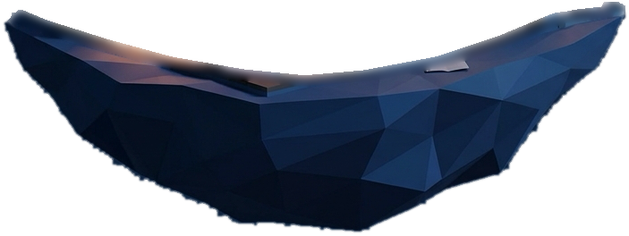
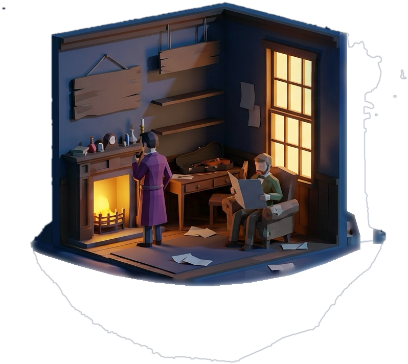
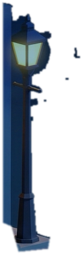
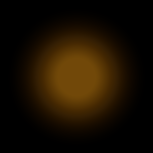
prefers-reduced-motion.The stage above proves the plate can hold a hand. This proves it can hold the book: three units of Beat I, Doyle verbatim, set as cream serif ink in the dark page margin beside a living diorama — one speech per unit, prefixed in small caps, the reader click-paced by a breathing teal dot, earlier lines receding so the eye always lands on the newest. Nothing here is a widget: the affordance is type in the same margin, and the room bed lights up on your first gesture.
CONTENT.md — post, undated, note1 — transcribed, not paraphrased. A thing read is not a thing said: the note is ruled off and set in italic, and it carries no speaker's voice.room-bed under everything from the first gesture, paper-rustle on the note-throw, click-soft on every advance. No music.The layered plate proved the room is a stage. This proves the figures on it are actors. Holmes has been cut out of the plate into his own alpha, the wall and hearth behind him painted back in, and the cut-out re-hung on the stage as five hinged pieces — head, near arm, torso, gown, legs — over the room he used to be part of. He breathes and turns towards the window on his own; click him and he draws on the pipe; click the desk and he walks to it as a four-frame sprite, passing behind Watson's armchair, which is a second cut-out laid in front of him. Watson is left baked into the plate on purpose: one actor is enough to prove the technique, and the difference between the two of them is the whole point.
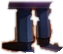
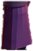
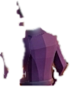
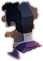
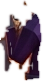
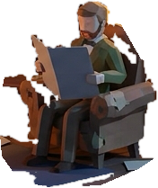
Which of the two actually holds up. The puppet is the one to keep. It is the plate's own paint, so it cannot drift: at rest it is the plate, and the idle only ever asks for a degree or two, which is exactly what a painted cut-out will give you. It is also the cheap one — 42 KB of parts and no new pixels invented anywhere a viewer can look. What it cannot do is change pose: he can breathe and turn and raise the pipe, and that is the whole vocabulary. The sprite buys real locomotion and pays for it in identity — the four frames came back from i2i a percent and a half apart in height and noticeably warmer than the plate, and even after normalising and pulling the palette back he is a redrawing of Holmes rather than Holmes. At this scale, mid- stride, that is a fair trade; hold a walk frame still next to the cut-out and it is not. The honest shape of the technique is what is built here: puppet for everything that happens on the mark, sprite only for the crossing between marks, and the hand-off hidden in the one moment the eye is following movement rather than reading a face.
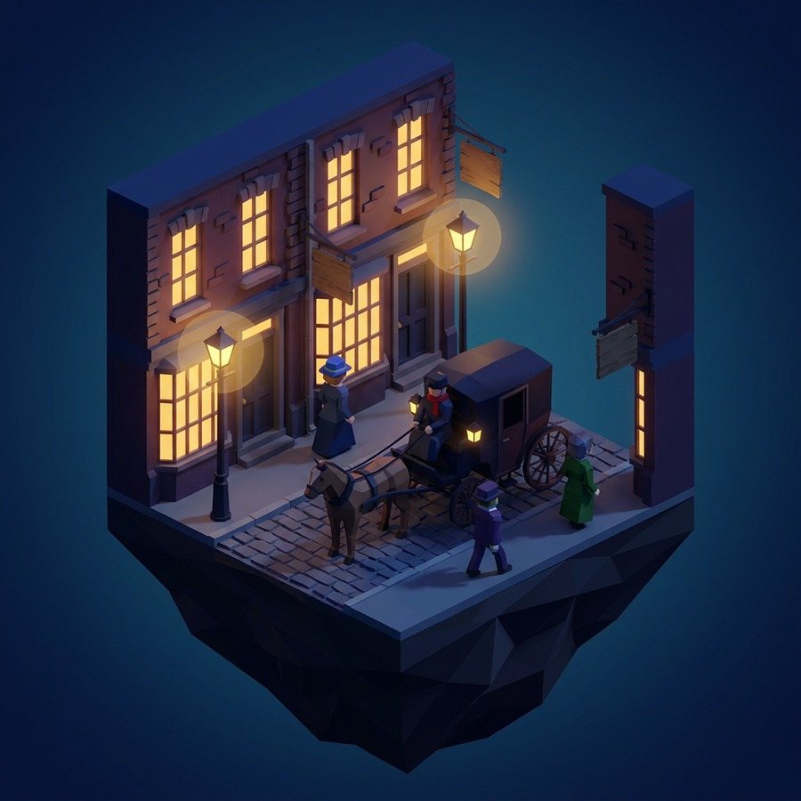
The street corner ran through the identical pipeline. It holds the composition even harder than the room does — carriage, horses and every figure stay exactly put — but it has less to burn: two lamps and a wall of windows, no hearth. The room plate is the better subject for this treatment, and it is the one the layered build was cut from.
Its first attempt failed the same way the room's did, and worse: a prompt that mentioned fog produced a white plume rolling off the cobbles and blew out the carriage lantern halfway through.
Both stages were captured through the same box, ten frames apart, and each compared against its own still-plate toggle — so the two numbers below are measured through identical scaling and cropping. Drift is how far the technique sits from the plate at its closest moment: what stays different no matter which frame you freeze on. Motion is mean frame-to-frame change.
| drift from the plate | motion | weight | |
|---|---|---|---|
| the plate, breathed | 12.25 RGB | 2.66 | 1.1 MB + a decode |
| the plate, layered | 3.53 RGB | 1.39 | 736 KB, no decode |
the video moves better
Twice the motion energy, and it is the right motion: the hearth flickers with a
changing flame shape rather than a pulsing ellipse, the window panes brighten unevenly
pane by pane, and the push-in is a real dolly, so every edge in the frame gets correct
perspective — not three cards on three speeds. Nothing was authored to get it.
the layers stay the plate
12.25 is not a light change. The model re-framed the plate to 16:9 — its diorama sits about
7 % larger in the box than the original does — and repainted it on the way: mantel
clutter, rock facets, wall tint. No frame of the loop is ever the plate again. The layered
build is the plate — its 3.53 is the fog and the emissives, added light and nothing else.
It is also deterministic, re-cuttable onto any plate by the same script, tunable
(parallax, fog, flicker are all parameters), reduced-motion aware, and it can take a
pointer.
The layered build is the one to carry. The direction was that the art is the experience and the plate must stay the plate; a technique that quietly repaints the art fails that on its own terms, however lovely the light. The video earns a place as the hero moment — a single loop at the top of a page, where nobody is holding it against the original. The layered build is what the product should be made of, and the one thing it lacks is depth inside the room: one more cut, separating the two wall planes from the furniture standing on the floor, would give the walls their own parallax and close most of the gap to the video's dolly.